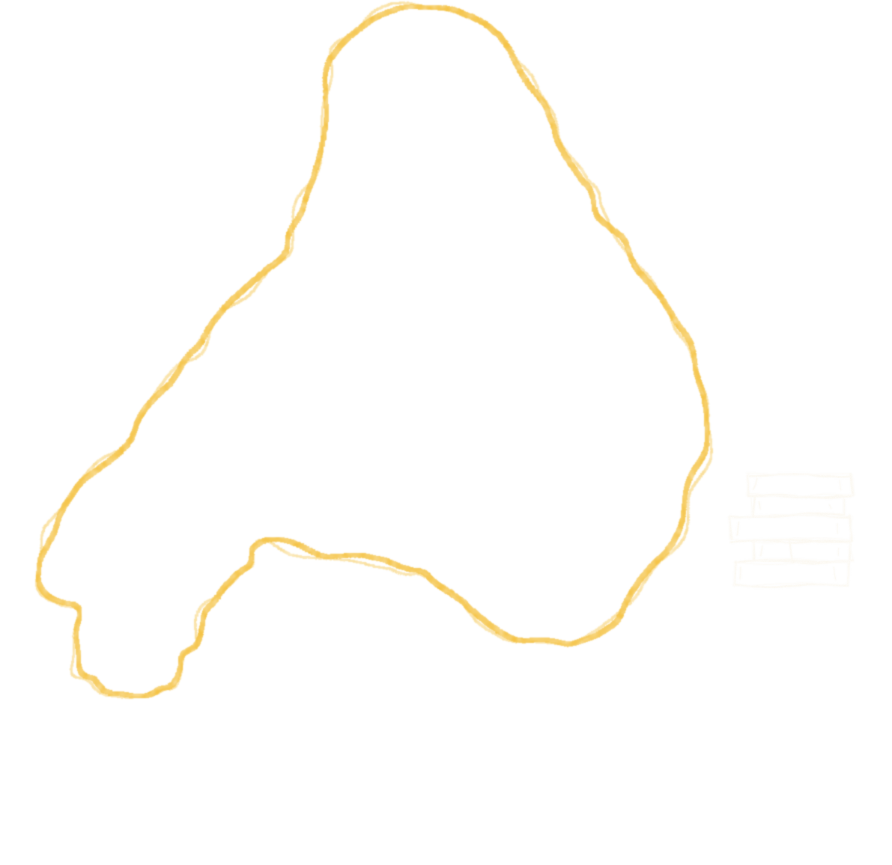
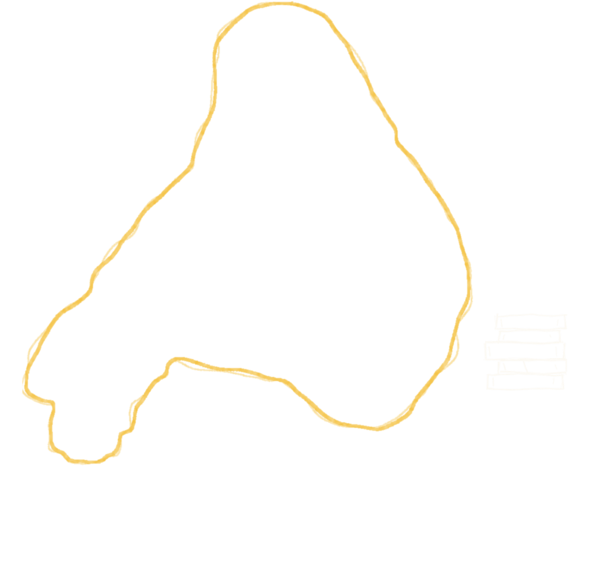
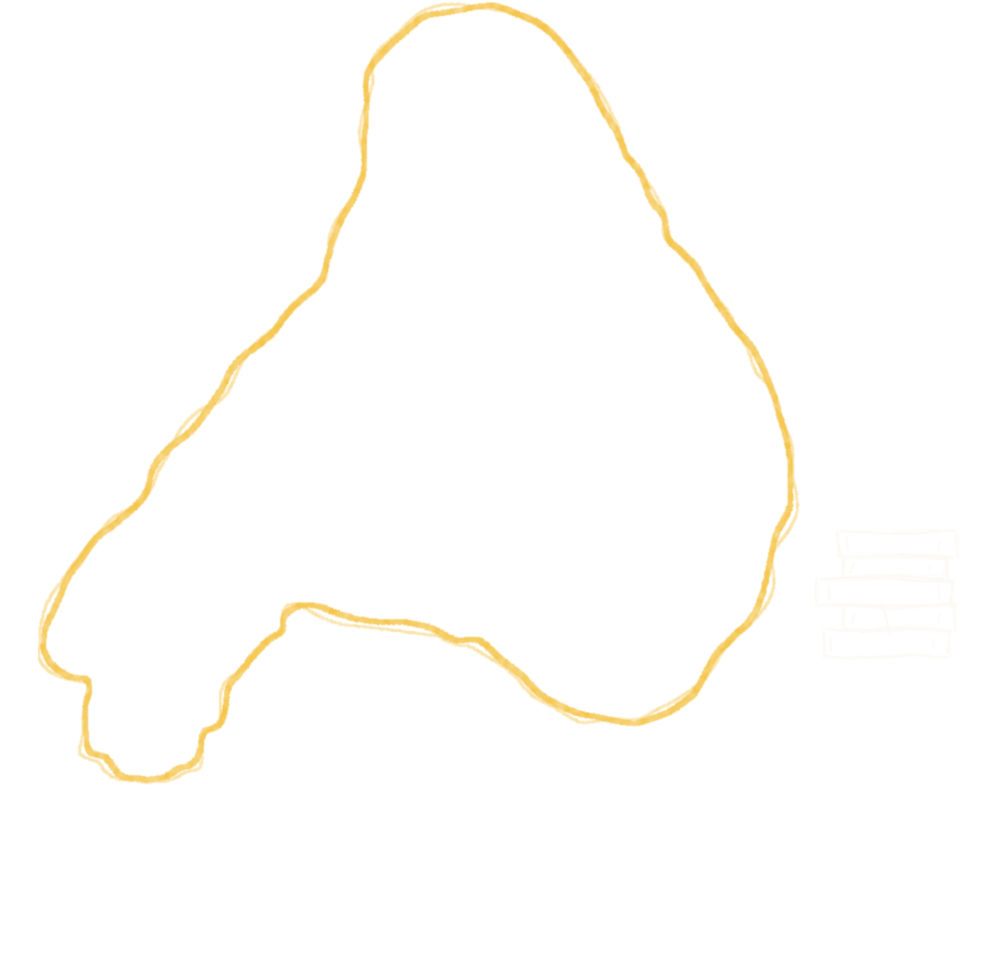
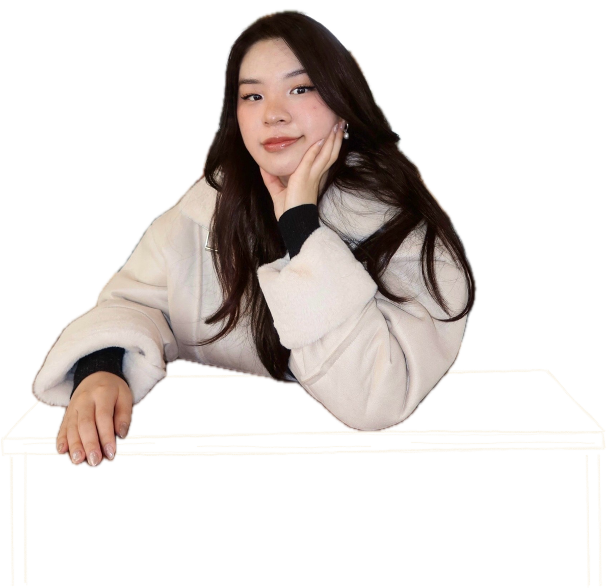
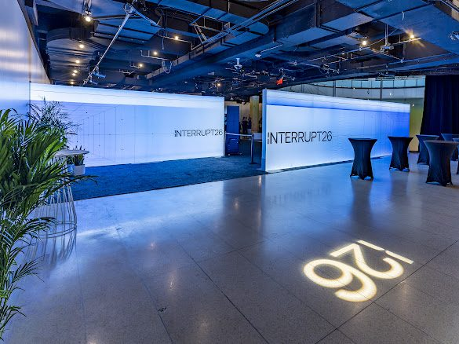
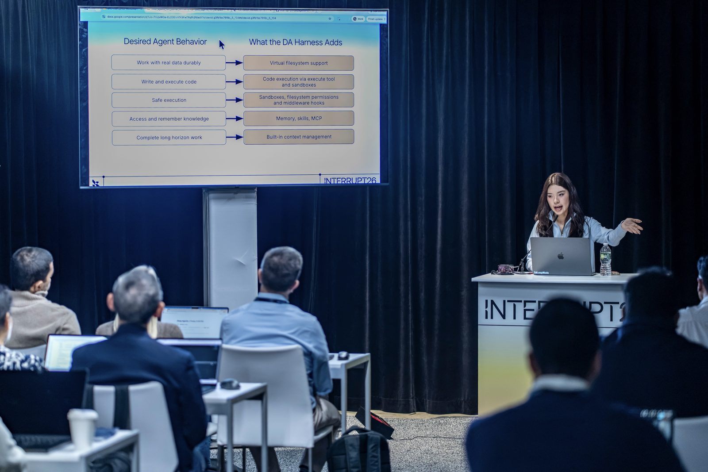
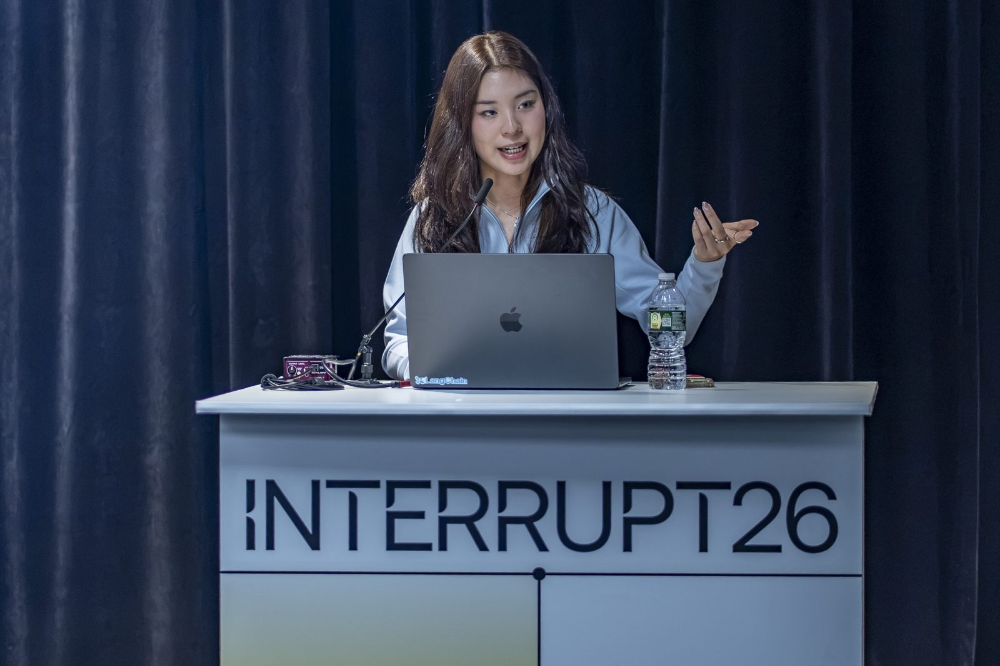

Scene 01
Jess Weng




Scene 02
ProductionLangChain
RoleEducation Engineer
Prev scenesCS @ Brown
BA @ Columbia
BA @ Columbia
Helping developers learn and build with hands-on content across LangChain’s ecosystem.
Scene 04
Shorts · five minutes or less
What is an Agent Harness?
What is a Skill?
What is Deep Agents?
Stripe’s Kai, built with LangChain in 1 week
How Deep Agents Manages Context
Swipe to see more →
Scene 07
The blooper reel · AI allegations
Take 1 of 4
Scene 08
14AHalo Twenty Eight 15A 16ATerrible jokes
Conference behind the scenes · Interrupt NYC



Post-credits
Where it all started · Internships
Fashion & artVirgil Abloh FoundationPartnerships & Strategyvia Align Communications & Creative
Consumer goodsThe Vita Coco CompanyConsumer Insights
Biotech & healthcareRegeneron PharmaceuticalsData Analytics